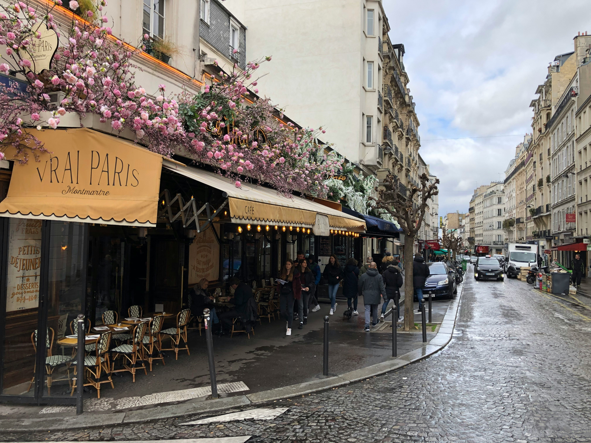

Jade's Parisian Guide
Jade's Parisian Guide

Planning a trip to the French Capital?
Whether you’re seeking a relaxing getaway or a whirlwind weekend, this guide will help you experience the city to the fullest. From world-famous landmarks to hidden local favorites, we’ve made it easy to explore Paris without the overwhelm.
Start with one of our curated three-day itineraries or browse by interest to find what inspires you.
Not sure where to start?
We’ve taken the work out of planning with three ready-made itineraries designed around different styles of travel. Whether you're in the mood for romance, classic sightseeing, or something a little off the beaten path, there’s something for everyone below.
Classic Parisian Charm
Savour the enduring charm of the city’s most iconic landmarks.
Hidden Gems of Paris
"Wander off the beaten path to uncover Paris’s lesser-known streets, spots, and stories."
Romantic Parisian Getaway
Slow strolls, scenic views, and cozy bistros—Paris at its most romantic
Prefer to curate your own itinerary?
Whether you're a foodie, art lover, history enthusiast, or just want to explore off-the-beaten-path spots, Paris offers something for everyone. Browse through the topics below to discover top activities, hidden gems, free attractions, and more to make the most of your visit.
"Paris is a haven for food lovers. From fresh pastries to gourmet dining, explore the city's cafés, bistros, and bakeries. Whether you're savoring a croissant on the go or enjoying a glass of wine in a local brasserie, Paris serves up unforgettable culinary experiences."
"Paris is full of timeless architecture. From Gothic cathedrals to Haussmannian boulevards,
the city's skyline tells a story of elegance and innovation. Stroll past centuries-old landmarks and
admire the artistry that gives Paris its unmistakable charm."
"Delve into Paris’ world-renowned museums and galleries. From classical art at the Louvre to contemporary works at the Centre Pompidou, there’s no shortage of cultural experiences to enrich your visit. Paris is a true cultural hub."


""Take a breath of fresh air in one of Paris’s many green spaces. From the manicured lawns of the Jardin du Luxembourg to the romantic paths of Parc des Buttes-Chaumont, nature is never far away."
""Experience Paris after dark with its buzzing nightlife. Enjoy a cabaret at Moulin Rouge, live jazz in hidden clubs, or cocktails in chic rooftop bars."